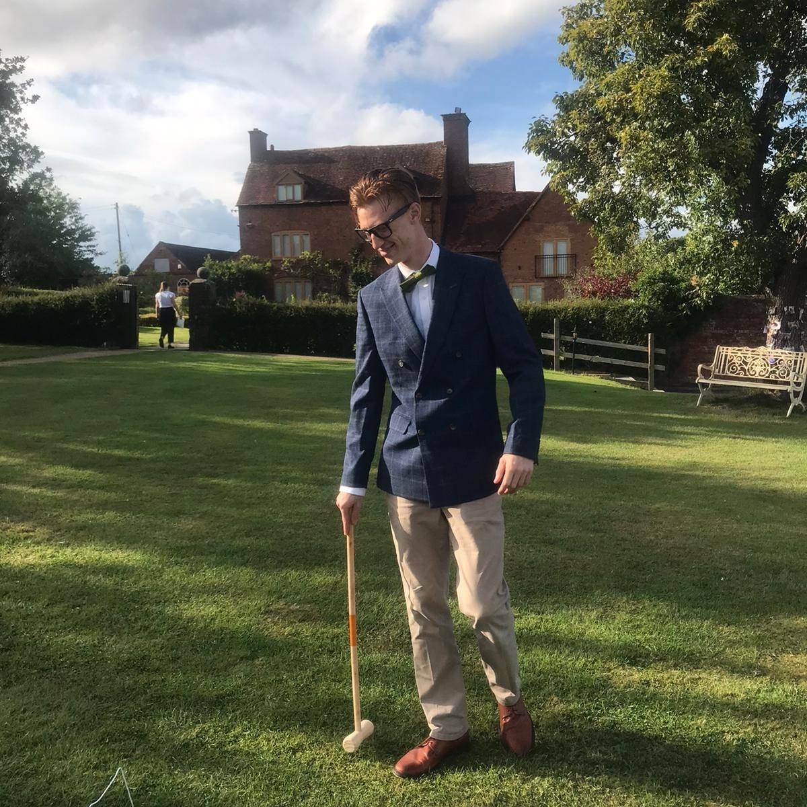

About Me

I have a deep passion for history. In 2017 I joined and have now become a leading member of "Royal Warwickshire Regiment Re-enactment Group". This group attends numerous events around the country (for example Wartime in the Cotswolds) explaining, demonstrating and re-enacting this key period in British history. During recent seventy-fifth World War Two remembrance celebrations, our group traveled to France a number of times and were asked to represent the regiment at a memorial service to honour the memory of soldiers massacred during the Dunkirk retreat. My involvement in this group very much helps keep my passion for history alive, through visiting historical sites both domestically and abroad and through wider research and reading.
I am also a keen snowboarder, skier, and skateboarder. During my time at Leeds Beckett University I was an active member of the Leeds Met Snowsports Society where I found my passion for snowboarding and skiing. I showed commitment to my studies whilst balancing my spare time between working at Debenhams and going to Castleford to practice skiing/snowboarding and still finding time to skate at Hyde park.